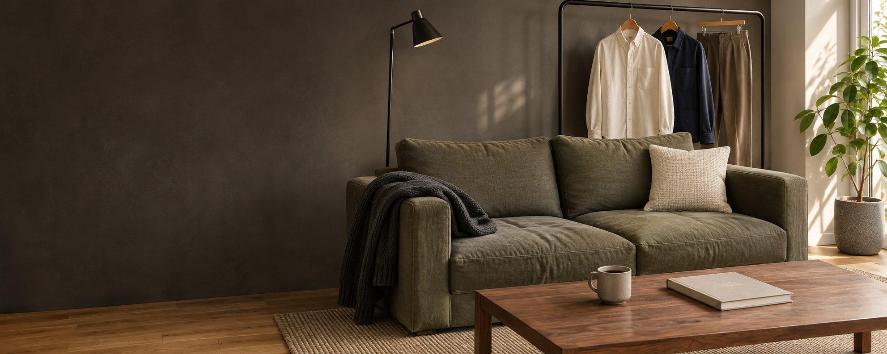
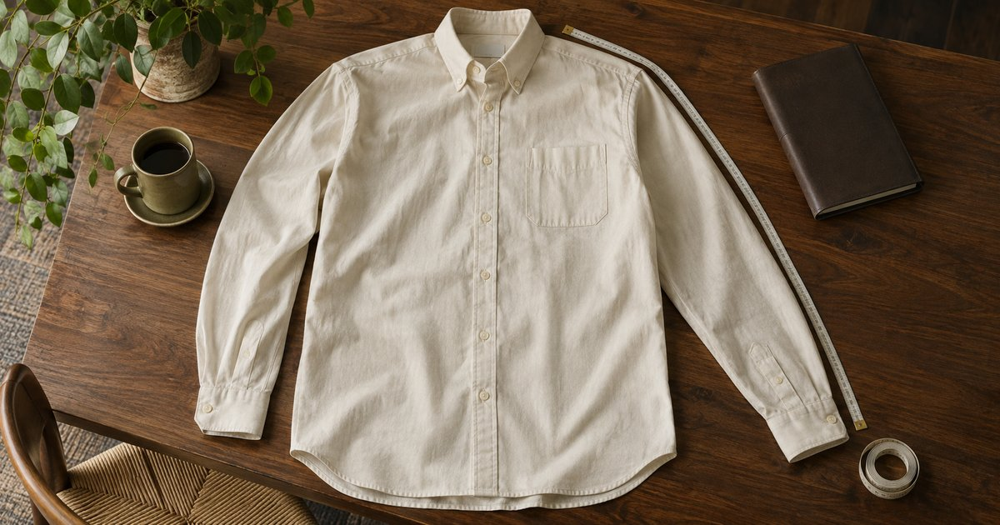
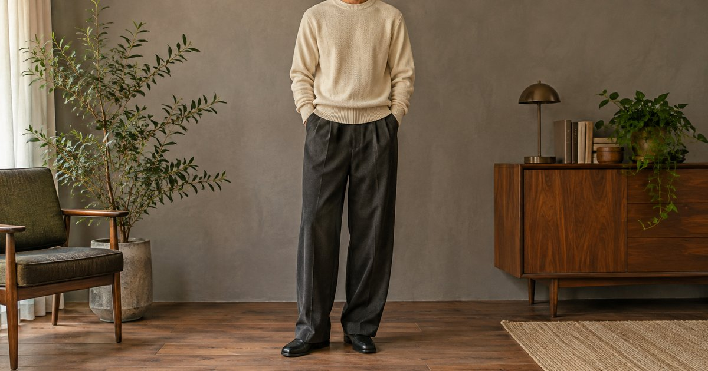

STYLE FOR YOUR ROOM & WARDROBE
服と部屋を、
ちょうどいい感じに。
流行を追いかけすぎず、長く使えるものを。20代・30代の男性に向けて、無理のない予算で服と部屋を整えるための「選び方」をまとめています。

APPAREL服を選ぶ定番アイテムの選び方・サイズ・手入れ

INTERIOR部屋を整える家具・照明・収納・レイアウト
まずはここから
はじめての方に読んでほしい3本です。


悩みから探す
無駄な買い物を減らす
買い足す前に読んでおきたい記事をテーマ別にまとめました。
新着記事
 アパレル
アパレルニットの選び方。ウール・カシミヤ・コットン・アクリルの違い
冬の定番ニットは素材で暖かさも見た目も変わります。代表的な4つの素材の特徴と、首元の形の選び方をまとめました。
 インテリア
インテリア一人暮らしのソファの選び方。サイズ・素材・手入れで比べる
置き場所の測り方、素材ごとの手入れのしやすさ、配置図、よくある失敗例、条件別のソファ3点まで。一人暮らしのソファ選びをまとめました。
 アパレル
アパレルチノパンの選び方。色・シルエット・丈で印象をコントロールする
デニムと並ぶ定番パンツ、チノパン。色とシルエットの選び方、きれいに見える丈の合わせ方を紹介します。
 インテリア
インテリアカーテンの選び方。サイズの測り方と機能の違い
部屋の面積の中でも大きな割合を占めるカーテン。正しいサイズの測り方と、遮光や断熱などの機能の選び方を紹介します。
 アパレル
アパレル大人が着るパーカーの選び方。子どもっぽく見せないポイント
ラクで便利なパーカーも、選び方次第で大人っぽく着られます。生地・色・サイズ感・合わせ方のコツをまとめました。
 インテリア
インテリアラグの選び方。サイズ・素材・色で部屋の印象を変える
床の印象を大きく変えるラグ。部屋の広さに合ったサイズと、季節や手入れに合わせた素材の選び方を紹介します。

アパレルシャツのサイズの選び方。肩・身幅・袖丈・着丈の見るべきポイント
シャツはサイズ感で印象が大きく変わるアイテム。通販でも失敗しないための、測る場所とチェックポイントを解説します。
 インテリア
インテリア初心者でも育てやすい観葉植物と、置き場所・水やりの基本
部屋に緑があるだけで雰囲気は大きく変わります。初心者でも枯らしにくい観葉植物の選び方と、置き場所・水やりのコツを紹介します。

アパレルワイドパンツの合わせ方。だらしなく見せないバランスのコツ
トレンドのワイドパンツは、トップスと靴の選び方がポイント。全体のバランスを整えるコツを紹介します。
ROOM & WEARの編集方針
- 流行よりも、長く使えて手持ちと合わせやすいものを優先して紹介します。
- 商品のサイズや仕様は、メーカーや販売ページの記載を確認したうえで掲載します。分からない情報は推測で書きません。
- 実際に使っていない商品について、使用レビューや体験談は書きません。
- 記事にはアフィリエイトリンクを含みますが、紹介料の有無で評価を変えることはありません。